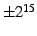

Next: Sample code Up: The Speex Codec Manual Previous: Speex wideband mode (sub-band Contents Index
Vorbis is a great project but its goals are not the same as Speex. Vorbis is mostly aimed at compressing music and audio in general, while Speex targets speech only. For that reason Speex can achieve much better results than Vorbis on speech, typically 2-4 times higher compression at equal quality.
First of all, it's not clear whether GSM-FR is covered by a Philips patent (see http://kbs.cs.tu-berlin.de/~jutta/toast.html). Also, GSM-FR offers mediocre quality at a relatively high bit-rate, while Speex can offer equivalent quality at almost half the bit-rate. Last but not least, Speex offers a wide range of bit-rates and sampling rates, while GSM-FR is limited to 8 kHz speech at 13 kbps.
As of version 1.0 beta 1, Speex is released under Xiph's version of the (revised) BSD license (see Appendix D). This license is one of the most permissive open-source licenses.
Yes. As long as you comply with the license. This basically means you have to keep the copyright notice and you can't use our name to promote your product without authorization. For more details, see license in Appendix D.
Ogg is a container format for holding multimedia data. Vorbis is an audio codec that uses Ogg to store its bit-streams as files, hence the name Ogg Vorbis. Speex also uses the Ogg format to store its bit-streams as files, so technically they would be ``Ogg Speex'' files (I prefer to call them just Speex files). One difference with Vorbis however, is that Speex is less tied with Ogg. Actually, if you just do Voice over IP (VoIP), you don't need Ogg at all.
Speex files have the .spx extension. Note, however that the Speex tools (speexenc, speexdec) do not rely on the extension at all, so any extension will work.
Just like Vorbis is not really adapted to speech, Speex is really not adapted for music. In most cases, you'll be better of with Vorbis when it comes to music.
This is called transcoding and it will always result in much poorer quality than the original MP3. Unless you have a really good (size) reason to do so, never transcode speech. This is even valid for self transcoding (tandeming), i.e. If you decode a Speex file and re-encode it again at the same bit-rate, you will lose quality.
Compilation on Windows has been supported since version 0.8.0. There are also several front-ends available from the website.
For most kinds of compression, encoding is inherently slower than decoding. In the case of Speex, encoding consists of finding, for each vector of 5 to 10 samples, the entry that matches the best within a codebook consisting of 16 to 256 entries. On the other hand, at decoding all that needs to be done is look up the right entry in the codebook using the encoded index. Since a lookup is much faster than a search, the decoder works much faster than the encoder.
You probably didn't build Speex with the fixed-point option (-enable-fixed-point). Even if you did, not all modes have been ported to use fixed-point arithmetic, so the code may be slowed down by a few float operations left (e.g. in the wideband mode).
One of the causes could be scaling of the input speech. Speex expects signals to have a  (signed short) dynamic range. If the dynamic range of your signals is too small (e.g. ), you will suffer important quantization noise. A good target is to have a dynamic range around which is large enough, but small enough to make sure there's no clipping when converting back to signed short.
There are many possible causes for that. One of them is errors in the way the bits are manipulated. Another possible cause is the use of the same encoder or decoder state for more than one audio stream (channel), which produces strange effects with the filter memories. If the input speech has an amplitude close to , it is possible that at decoding, the amplitude be a bit higher than that, causing clipping when saving as 16-bit PCM.
It's hard to give precise figures since no formal listening tests have been performed yet. All I can say is that in terms of quality, Speex competes on the same ground as other proprietary codecs (not necessarily the best, but not the worst either). Speex also has many features that are not present in most other codecs. These include variable bit-rate (VBR), integration of narrowband and wideband, as well as stereo support. Of course, another area where Speex is really hard to beat is the quality/price ratio. Unlike many very expensive codecs, Speex is free and anyone may distribute or modify it at will.
I guess it all depends on the bit-rate used. Though no formal testing has yet been performed, I'd say is correctly at 8 kbps and above. Also, make sure you don't use the lowest complexity (see SPEEX_SET_COMPLEXITY or -comp option), as it causes significant noise.
If I could do that I'd be very rich by now :-) Seriously, that would break fundamental laws of information theory.
I have completed my Ph.D. at the University of Sherbrooke in 2005 in mobile robotics. Although I did my master with the Sherbrooke speech coding group (in speech enhancement, not coding), was no longer associated with them when developing Speex. It should not be understood that they or the University of Sherbrooke have anything to do with the Speex project. Furthermore, Speex does not make use of any code or proprietary technology developed in the Sherbrooke speech coding group.
CELP stands for ``Code Excited Linear Prediction'', while ACELP stands for ``Algebraic Code Excited Linear Prediction''. That means ACELP is a CELP technique that uses an algebraic codebook represented as a sum of unit pulses, thus making the codebook search much more efficient. This technique was invented at the University of Sherbrooke and is now one of the most widely used form of CELP. Unfortunately, since it is patented, it cannot be used in Speex.
Jean-Marc Valin 2007-05-23